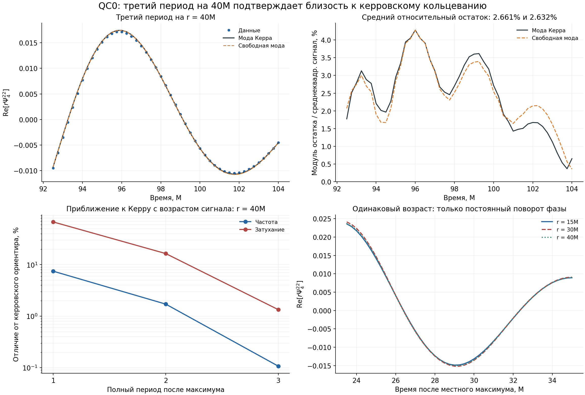

Отчёт сохранён как результат своего этапа. Исправления и границы всего выпуска сведены в итоговом отчёте.
BH-HF3-R7B — проверка позднего кольцевания после продолжения до 105M
Запланированный контроль третьего периода на r=40M выполнен. Результат согласуется с керровским кольцеванием на трёх радиусах; маршрут может переходить к HF4.
Это завершение конкретной контрольной задачи HF3. Оно не означает, что вся ранняя динамика объяснена или что проведена независимая экспериментальная проверка ОТО. Исследуется собственный численный расчёт QC0, а не непосредственно запись GW150914.
Технический результат
Прочитан предоставленный BH_HF3_R7A_output.zip. Подтверждены t=105M, итерация 53760, семь сообщений восстановления с t=95M и код завершения 0. Продолжение заняло около 25 минут 18 секунд по журналу сценария. Повторная эволюция здесь не запускалась.
Независимо проверены 125 волновых рядов, точный стык 95M, полная новая сетка времени и три файла общего горизонта QLM slot 2. Проверены хеши программы, исходного и нового файлов параметров. 136 общих файлов старого участка побайтно совпадают с прежним пакетом R6A. Сам физический анализ распространения и закона 1/r из R6B не повторялся.
Журнал и локальный реестр подтверждают создание обеих частей контрольной точки it=53760. Гигабайтные контрольные точки не входят в полученный ZIP; их полное содержимое здесь не читалось.
Как проведено сравнение
До подгонок этого этапа сохранён BH_HF3_R7B_protocol.json. Основной керровский ориентир зафиксирован по ранее вычисленному численному спектру QC0:
[M_f=0.977461203278627M,\quad J_f=0.648087073319352M^2,\quad \chi=0.6783194994253878.]
[\omega_K=0.5353401318639867M^{-1},\qquad \alpha_K=0.08345059699511974M^{-1}.]
Спектр получен ранее численным решением керровской спектральной задачи; он не подгонялся к новым волновым данным. Метод вычисления: документация qnm, Stein, 2019. Длинная запись чисел обеспечивает воспроизводимость вычислений и не задаёт физическую точность расчёта.
Период T=11.73680980221365M. Третий период означает окно возраста от 2T до 3T после местного максимума. Для r=40M это 92.4736196044–104.2104294066M; на исходной сетке в него входят 47 отсчётов 92.50–104.00M. Концы окна не дополнялись искусственными измерениями.
Сравниваются модели $z(t)=C\exp[(-\alpha-i\omega)(t-t_0)]$. В фиксированной модели свободна комплексная амплитуда $C$; во второй свободны также $\omega$ и $\alpha$. В обеих минимизируется один комплексный критерий $\mathrm{RSS}=\sum_j|z_j-z_{\rm model}(t_j)|^2$ с одинаковыми весами. Амплитуда находится аналитической проекцией; частота и затухание — численно с четырёх начальных приближений.
Так исправлен недостаток старого сравнения R6B: раньше свободные параметры брались из отдельных регрессий фазы и логарифма амплитуды. Для сопоставимости заново обработаны только выбранные опорные окна прежних данных тем же комплексным критерием. Поэтому новые оценки не обязаны совпадать с прежними регрессиями.
Третий период: основной результат
| Радиус | Частота, M⁻¹ | Затухание, M⁻¹ | Отличие частоты | Отличие затухания |
|---|---|---|---|---|
| 15M | 0.535321949 | 0.082188152 | 0.003% | 1.513% |
| 30M | 0.535714470 | 0.082850136 | 0.070% | 0.720% |
| 40M | 0.535913909 | 0.082331989 | 0.107% | 1.340% |
Все три радиуса удовлетворяют ранее выбранным численным ориентирам: отличие частоты не более 1%, затухания не более 5%. Эти проценты описывают разность точечных оценок; они не являются доверительными интервалами или измерением полной численной ошибки.
| Радиус | Относительный остаток Керра | Остаток свободной модели | Условный ΔBIC |
|---|---|---|---|
| 15M | 2.387% | 2.355% | -6.524 |
| 30M | 2.594% | 2.585% | -8.407 |
| 40M | 2.661% | 2.632% | -7.029 |
Относительный остаток определён как $\sqrt{\mathrm{RSS}/\sum_j|z_j|^2}$. Например, на r=40M фиксированная модель даёт 2.661%, свободная — 2.632%. Два дополнительных параметра уменьшают остаток лишь немного. Остаток около 2.6% сохраняется в обеих моделях и не объявляется объяснённым.
Для преемственности приведён $\Delta\mathrm{BIC}=2N\log(\mathrm{RSS}K/\mathrm{RSS}{free})-2\log(2N)$, где N — число комплексных отсчётов; число действительных параметров равно 2 и 4. Его значения ниже прежнего порога +10 на всех трёх радиусах. Но предположение о независимых одинаково распределённых ошибках здесь не обосновано: остатки численного сигнала коррелированы, а модель численной ошибки отсутствует. Поэтому этот показатель не переводится в вероятности гипотез и не используется как калиброванный тест ОТО.
Устойчивость и проверка продолжением
Окно r=40M сдвигалось на −0.5, −0.25, 0, +0.25 и +0.5M при прежней длине. Отдельно использовались чётные и нечётные отсчёты. Это проверка чувствительности к выбору точек, а не сходимости решения по разрешению сетки. Во всех этих случаях отличие частоты остаётся 0.035–0.118%, затухания — 0.866–2.080%; относительный остаток фиксированной модели — 2.562–2.742%.
Две проверки на аналитически заданных затухающих комплексных сигналах восстанавливают известные частоту и затухание. Все четыре старта оптимизации сходятся к одному решению в каждом основном окне; решений на границах диапазонов нет.
Дополнительно амплитуда и свободные параметры оценены только на первых двух третях третьего периода r=40M. На оставшейся трети, без новой подгонки, получены ошибки предсказания: 2.230% для фиксированной модели Керра и 5.509% для свободной. Это один хронологический контроль на 15 отсчётах, а не независимый набор наблюдений.
На укороченном обучающем окне свободная оценка затухания отличается от ориентира уже на 5.34%. Поэтому устойчивость полного периода при малых сдвигах не следует превращать в заявление о столь же точном определении параметров на любом коротком отрезке.
Что меняется со временем и радиусом
| r=40M: период после максимума | Отличие частоты | Отличие затухания | Относительный остаток Керра |
|---|---|---|---|
| 1 | 7.486% | 67.613% | 22.878% |
| 2 | 1.717% | 16.444% | 6.351% |
| 3 | 0.107% | 1.340% | 2.661% |
На одном и том же радиусе одно-модовое керровское описание последовательно улучшается с возрастом сигнала. Новые окна на внешних радиусах продолжают ту же картину:
| Радиус и период | Частота, M⁻¹ | Затухание, M⁻¹ | Отличие частоты | Отличие затухания |
|---|---|---|---|---|
| 50M, 2-й | 0.526038031 | 0.068636573 | 1.738% | 17.752% |
| 60M, 1-й | 0.494300578 | 0.026086923 | 7.666% | 68.740% |
Второй период на 50M близок по параметрам ко второму на 40M; первый на 60M — к первому на 40M. Значительное отличие ранних периодов от одной поздней моды само по себе не является отклонением от ОТО. В этих данных решающее значение имеет возраст сигнала после местного максимума.
На третьем периоде комплексные формы также согласуются после умножения на радиус и одного постоянного поворота фазы. Дополнительный временной сдвиг и подгонка амплитуды не использовались.
| Пара радиусов | Когерентность | Различие после поворота фазы |
|---|---|---|
| 15–30M | 0.999963815 | 2.521% |
| 15–40M | 0.999969149 | 1.184% |
| 30–40M | 0.999985125 | 1.550% |
Соотношение $\Psi_4^{2,-2}\simeq\overline{\Psi_4^{22}}$ в трёх поздних окнах выполняется с относительным различием менее $8\times10^{-16}$. Это внутренняя согласованность данных расчёта с заданной симметрией, а не независимая проверка природы слияния.

Поздний горизонт
На 100–105M средние значения составляют Mf=0.9774491229M, Jf=0.6481486193M², chi=0.6784006850. По отношению к зафиксированному ориентиру масса меняется примерно на −0.00124%, а безразмерный спин — на +0.01197%. Ориентир основного анализа намеренно оставлен прежним. Эти небольшие изменения дополнительно напоминают, что последние цифры оценок частоты не являются точностью знания конечного состояния.
Параметры Yitian не подставлялись в QC0. Его данные относятся к другой конфигурации; выводы A1–A4 сохранены отдельно. В A3/A4 ранняя динамика и конкретная квадратичная связь не получили полного подтверждения.
Итог и маршрут
BH_HF3_R7B_THIRD_PERIOD_R15_R30_R40_KERR220_COMPATIBILITY_SUPPORTED_HF4_READY
Техническое продолжение завершено, третий период на r=40M доступен, а выбранные количественные условия позднего сравнения выполнены на 15, 30 и 40M. По этой контрольной задаче дальнейшее удлинение QC0 сейчас не требуется.
Область вывода ограничена одной численной конфигурацией, одним разрешением, конечными радиусами извлечения и выбранными временными окнами. Не выполнены экстраполяция к бесконечности, проверка сходимости по сетке или независимая статистическая проверка ОТО. Не установлены дополнительные измерения, кротовая нора или отдельная «гиперформа» как физический объект. Переходные структуры остаются предметом геометрического описания.
Следующий шаг — HF4-A1: определить, что именно можно восстановить из имеющихся горизонтовых моментов.
- Сопоставить определения коэффициентов, угловой базис, ориентацию и меру интегрирования для QC0 и данных Yitian.
- Отдельно установить, какие скалярные карты на вспомогательной сфере восстанавливаются из конечного набора моментов и какая дополнительная информация нужна для физической метрики горизонта.
- Проверить роль обрезания по l≤8 и выбор шкалы изображения; указать, какие особенности изображения определяются данными, а какие — способом представления.
- После этого подготовить научно подписанную визуализацию динамики; 3D-фильм остаётся результатом HF4 после определения допустимого содержания реконструкции.
Воспроизведение
Основной анализ: python BH_HF3_R7B.py. Оформление готовых результатов без повторных подгонок: python BH_HF3_R7B_finish.py. Самодостаточный архив содержит оба входных ZIP, программы, протокол, численные таблицы, результаты проверок и запись состояния. Нужны numpy, scipy и matplotlib. Программа Einstein Toolkit этими командами не запускается.